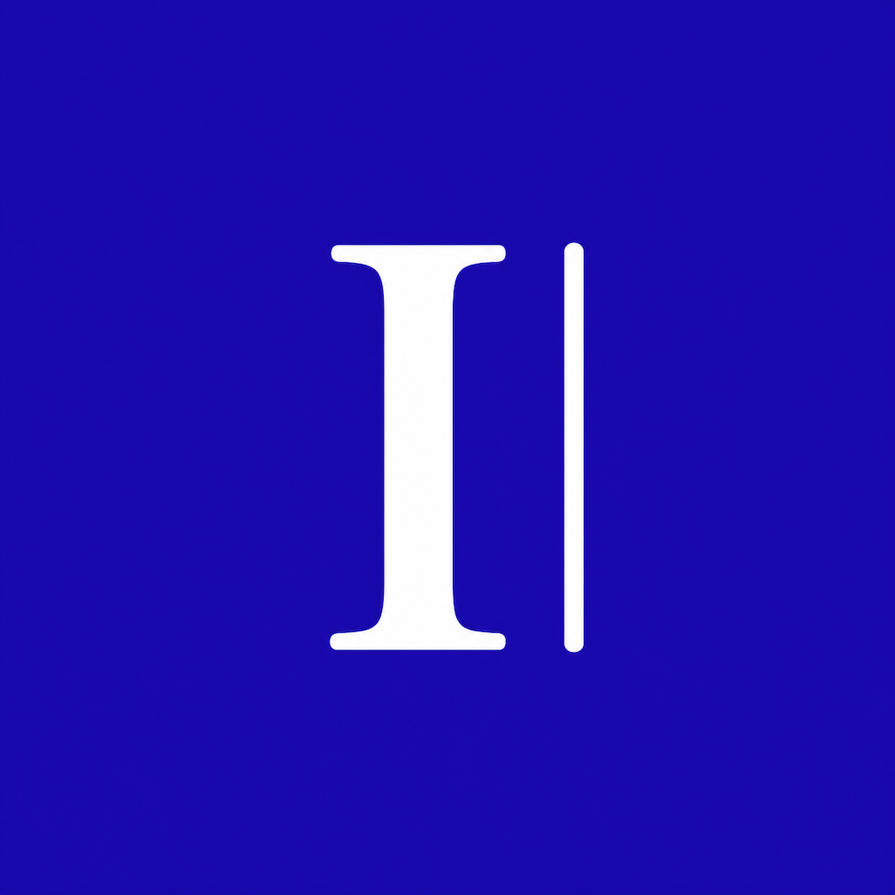
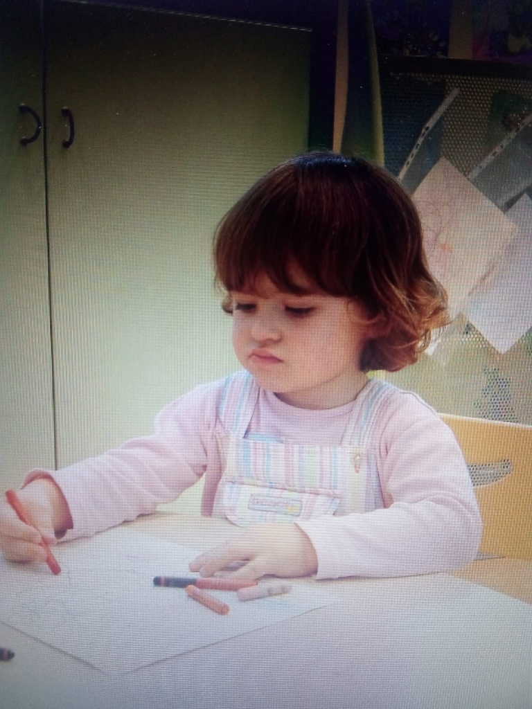
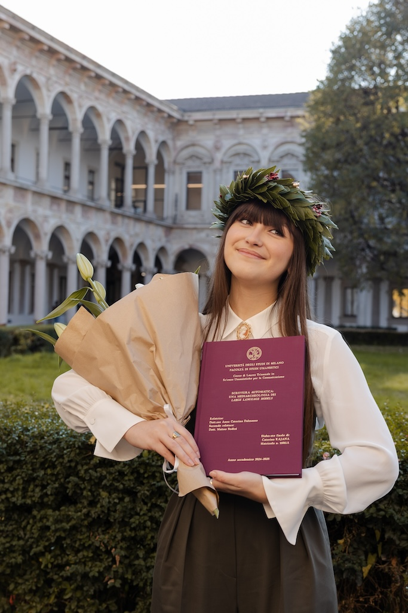
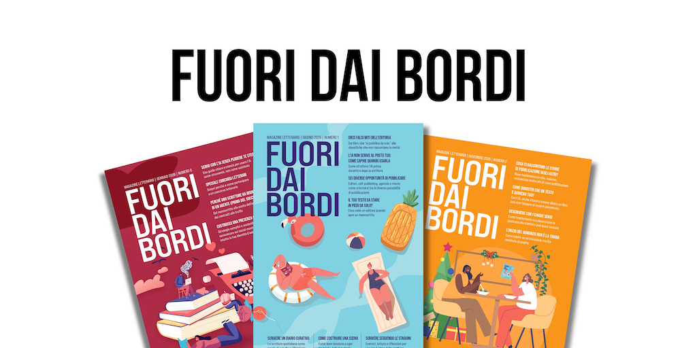
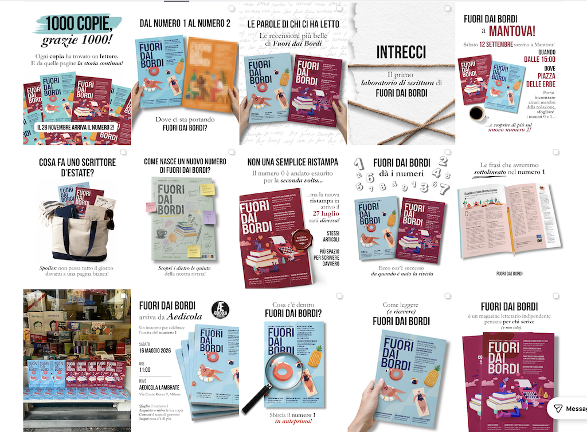
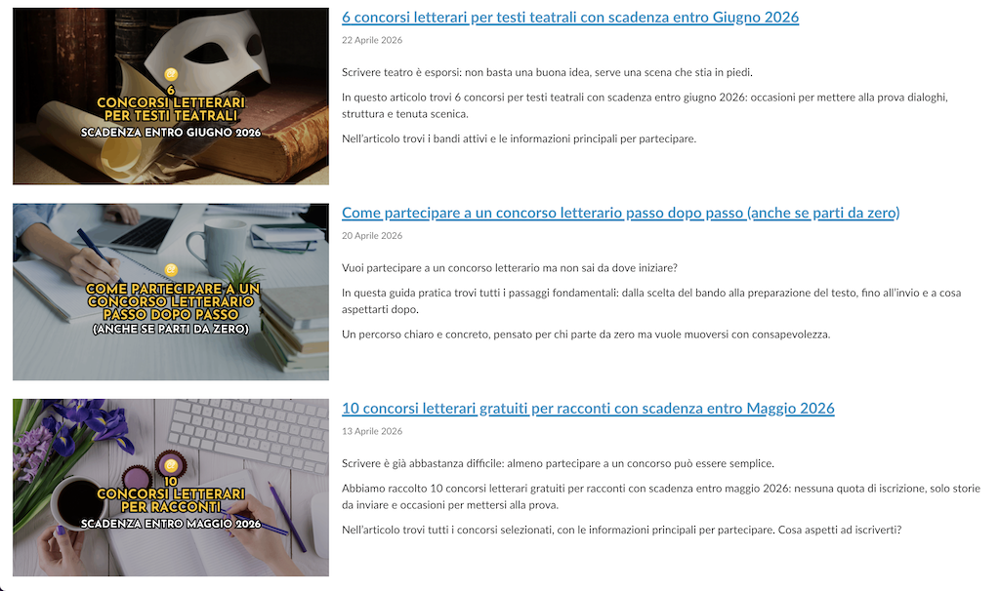
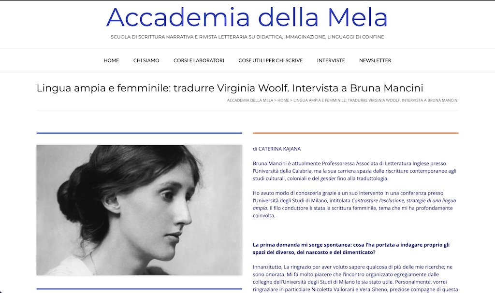
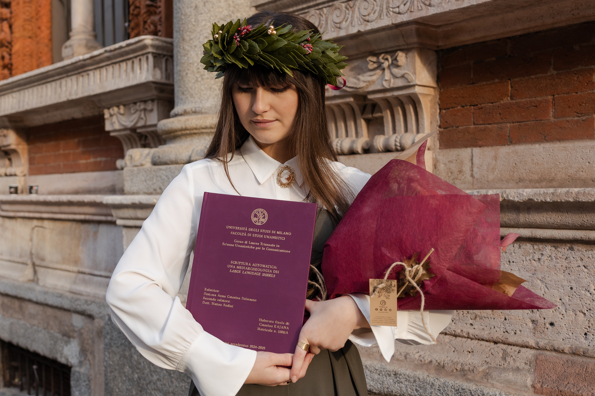

Immediata
La mia newsletter e spazio di scrittura più rappresentativo. Un laboratorio di idee e riflessioni che intreccia tecnologia, cultura e creatività per osservare e interrogare le trasformazioni del presente.
Leggimi su Substack →
Qui ancora non sapevo scrivere, in realtà.
E nemmeno parlare.
Ho iniziato piuttosto tardi e i miei erano molto preoccupati. A quanto si racconta, però, nel giro di una settimana di asilo non ho più smesso di accumulare parole.
È iniziato tutto da lì: un piccolo ma intenso involucro di vita in attesa di trovare la forma giusta.
La situazione si è decisamente sbloccata e le parole sono diventate la mia specialità: sono laureata in Scienze Umanistiche per la Comunicazione all'Università degli Studi di Milano e sto proseguendo il mio percorso a Torino in Servizi Human-centered per Società Digitali.
Studio e lavoro tra scrittura, narrazione cross-platform ed esplorazione del rapporto tra linguaggi umani e intelligenza artificiale.

Mi piace esplorare ambiti diversi, approfondire ciò che non conosco e cercare connessioni inaspettate tra idee, discipline e linguaggi. Sono attratta dalle domande prima ancora che dalle risposte.
Appena ho un'idea in cui credo, sento il bisogno di vedere se può diventare realtà. Non aspetto che le occasioni arrivino: mi piace cercarle, crearle e trasformarle in possibilità concrete. Quando qualcosa mi appassiona davvero, trovo sempre il modo di mettermi alla prova, anche percorrendo strade che non conosco ancora.
Cerco di affrontare ogni progetto con attenzione, spirito critico e grande cura dei dettagli. Tendo spesso a mettere in discussione le prime intuizioni e punto sempre a trovare soluzioni che abbiano un senso, non soltanto un bell'aspetto.
Il mio percorso nasce dalla scrittura e dall'interesse per i linguaggi, le storie e i processi creativi. Con il tempo, questa curiosità si è estesa ai media digitali che stanno trasformando il nostro modo di comunicare, produrre contenuti e interagire con il mondo. Da questo intreccio di interessi nascono alcune delle domande che guidano il mio percorso di ricerca e di lavoro:
Che cosa significa essere autori oggi? E come stanno cambiando i processi creativi con l’evoluzione digitale? Dove risiede l'identità di chi scrive: nelle idee, nelle parole o nelle scelte?
Dove finisce il contributo della macchina e dove inizia quello umano? Possiamo immaginare nuove forme di collaborazione senza rinunciare alla nostra autonomia creativa?
Come possiamo progettare tecnologie che non si limitino a funzionare, ma che rispondano davvero ai bisogni degli autori di oggi?
Più cerco risposte, più nuove domande prendono forma. Ed è proprio in questa continua esplorazione che sto trovando una direzione in cui mi riconosco davvero.
Una selezione di esperienze, collaborazioni e sperimentazioni che raccontano il mio percorso tra comunicazione, scrittura e tecnologie.

La mia newsletter e spazio di scrittura più rappresentativo. Un laboratorio di idee e riflessioni che intreccia tecnologia, cultura e creatività per osservare e interrogare le trasformazioni del presente.
Leggimi su Substack →
Partecipazione alla costruzione del progetto editoriale e ideazione e sviluppo di rubriche, format e contenuti (articoli,esercizi e test interattivi).
Sfoglia alcuni miei contributi →
Creazione di contenuti visivi e narrativi per raccontare il magazine, valorizzarne l'identità e coinvolgere la community.
Visita la pagina Instagram →
Aggiornamento e curatela dei post di scrittura creativa e dei reminder periodici dedicati ai concorsi letterari.
Visita il blog →
Curatela della rubrica dedicata all'analisi dei linguaggi, alla scrittura e alle connessioni tra culture e traduzione.
Visita il sito →
Ricerca sui linguaggi generativi e sul ruolo dell'intelligenza artificiale nei processi comunicativi e creativi (110/110 con lode).
Leggi l'estratto →